One satisfying loop
One site, one rover, 30 deposits, limited cargo, one delivery depot, one drill upgrade and local saving.
An original mining and hauling game, built one sprint at a time. A practical handoff for your laptop AI agent.
One site, one rover, 30 deposits, limited cargo, one delivery depot, one drill upgrade and local saving.
Coastal salvage, a compact unmanned rover, a rear cargo tray, cream-and-teal UI and an outpost beacon objective.
Deliver 60 fragments and purchase the drill upgrade. Test the complete loop and reload it without lost or duplicated progress.
This is a planning schematic. The setting, shapes, values and UI arrangement are proposals for your game.
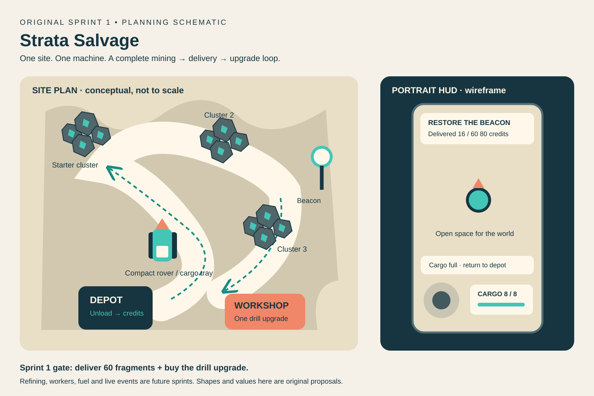
Sprint 2 introduces a single refining station. Sprint 3 adds one automated carrier. Later sprints can expand deposits, tools, sites and restoration.
Both supplied videos were sampled in the browser. No installed-game test or complete transcript was obtained. Store claims, observed frames and original proposals are labeled separately in the documents.
The practical additions are stable material identity, exact transfers, collider and pooling cleanup, saved world state, and success-driven tutorial hints. Sprint 1 keeps its original scope and tuning.
No original APK assets, code or balance tables are included. Table presence does not establish active runtime behavior. Read the source register for evidence boundaries.
12 timestamped captures from the supplied videos. Use these to understand mechanics. These are third-party research images and must stay outside game assets and builds.
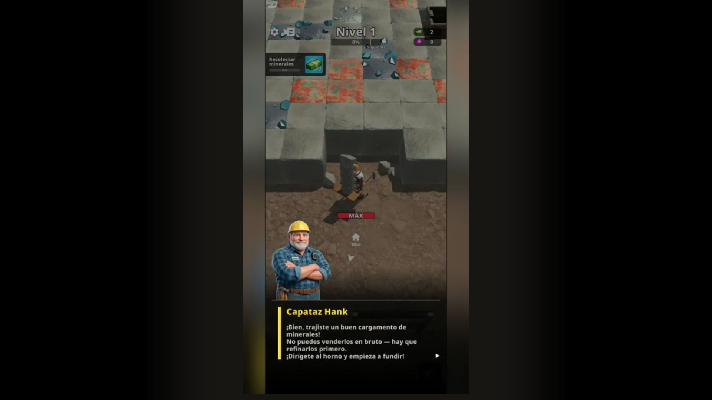
The opening tutorial directs raw material through a refinery before sale.
V2 · 00:20 ↗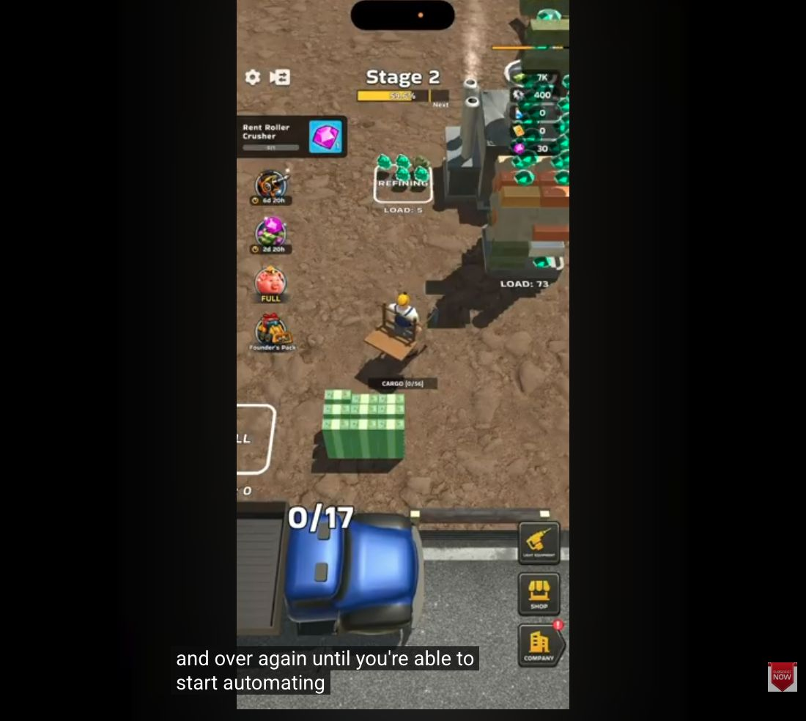
Refinery input/output, carried-load count, a sale area and truck are visible.
V1 · 00:30 ↗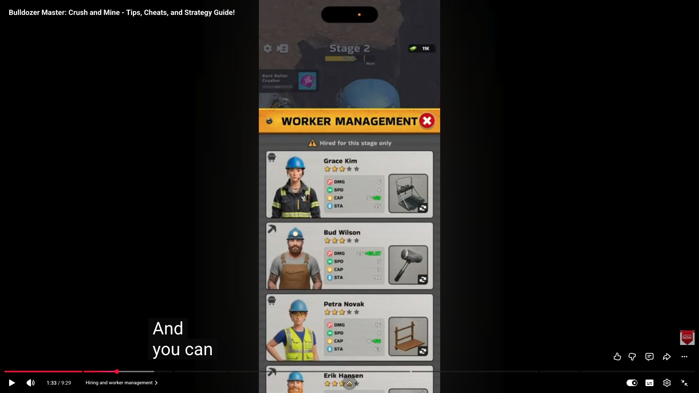
Roles, star ratings, equipment, four stat labels and a stage-only hiring notice.
V1 · 01:33 ↗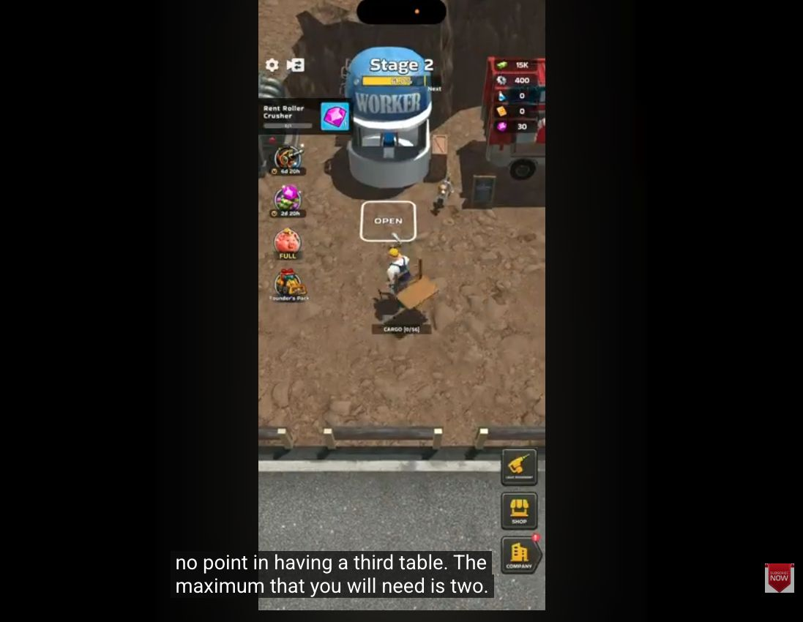
A worker building and ground interaction marker are visible.
V1 · 03:12 ↗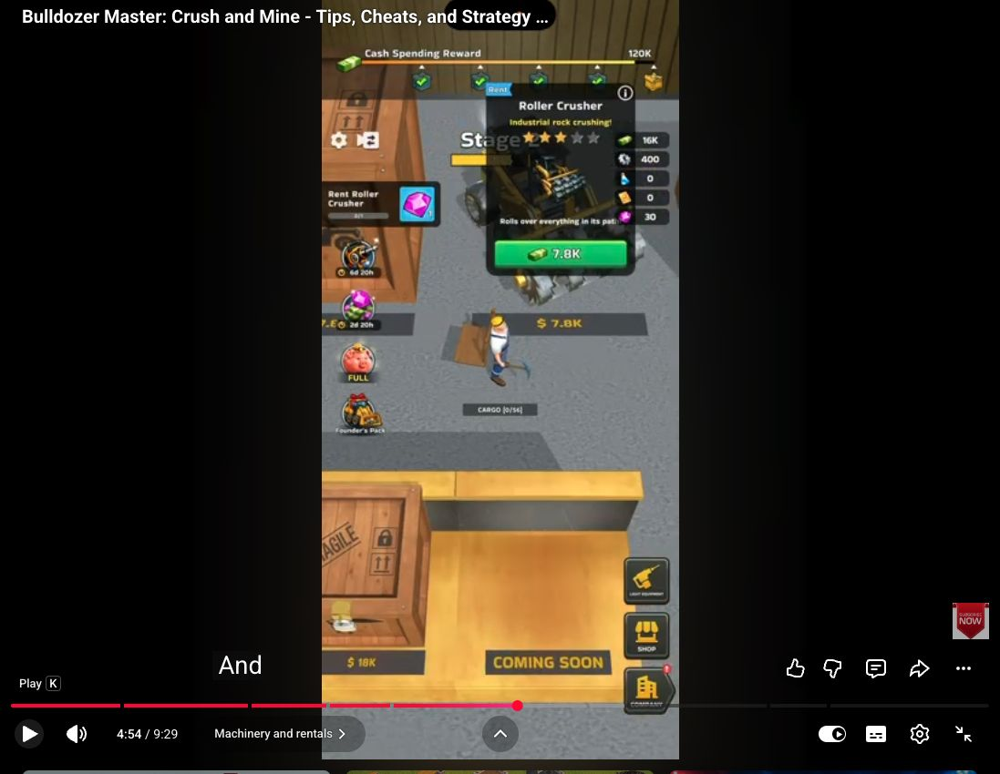
A roller-crusher offer illustrates a separate heavy-equipment layer.
V1 · 04:54 ↗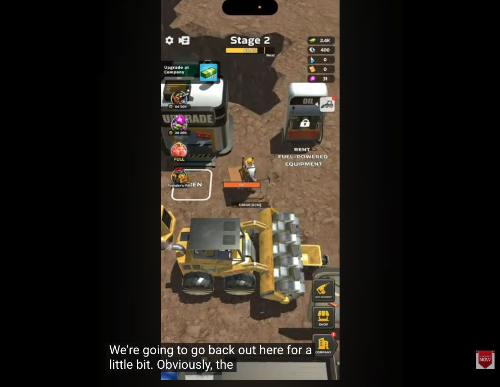
Rental signage, a gauge and large machinery are visible; exact fuel rules are unverified.
V1 · 05:41 ↗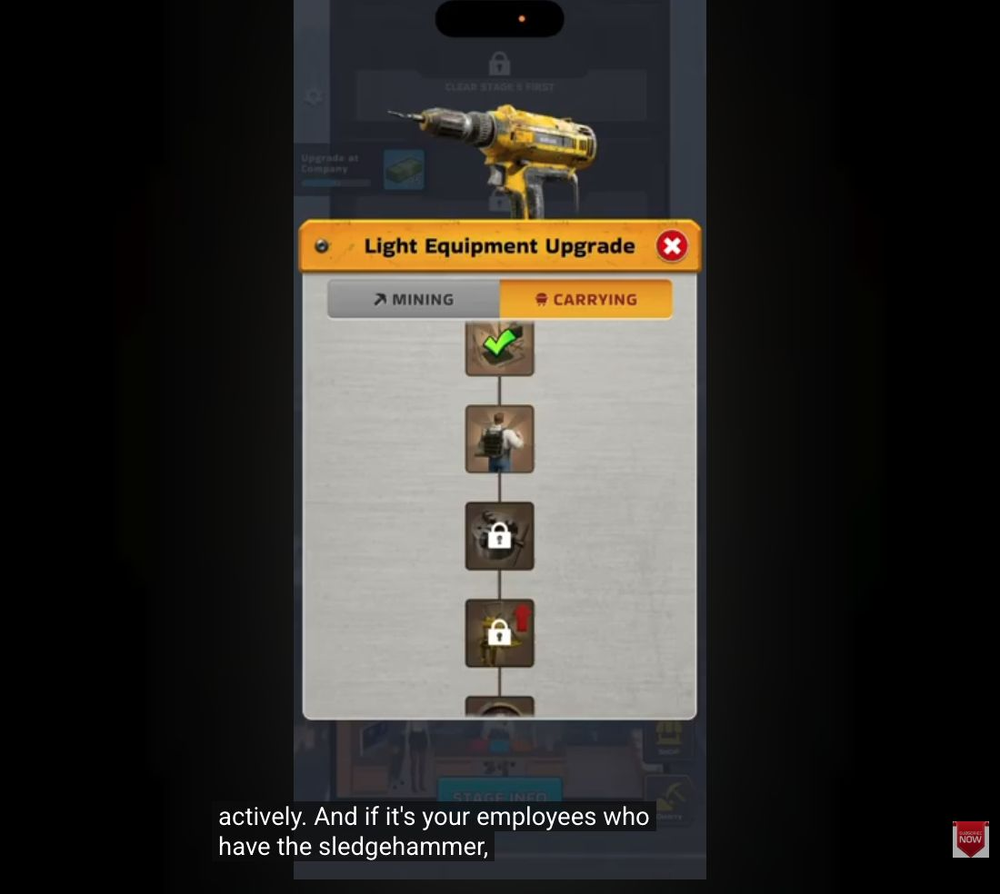
Mining and carrying tabs with locked equipment progression.
V1 · 08:32 ↗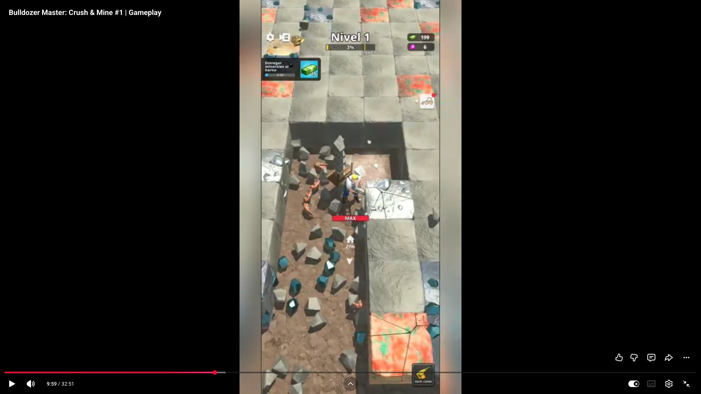
Rock corridors, fragments, cargo-full feedback, task card and direction cue.
V2 · 09:59 ↗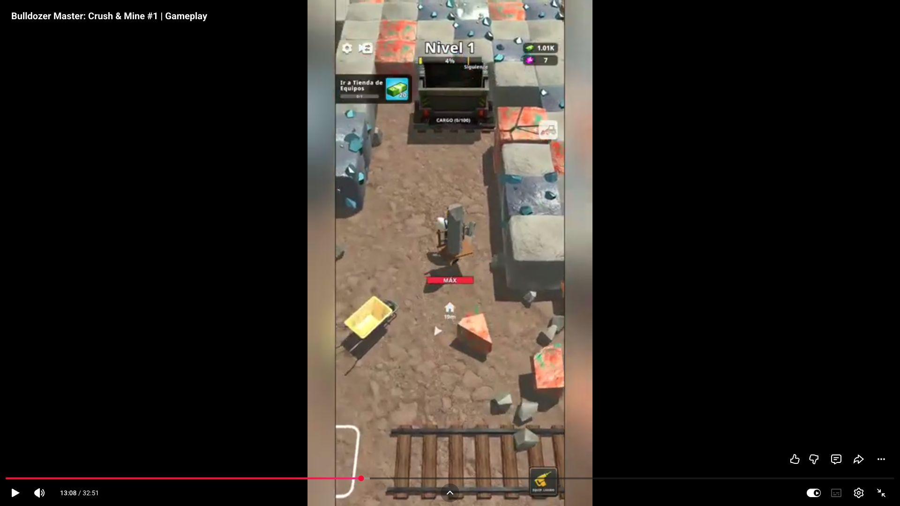
Tall carried material and a large vehicle occupy the cleared route.
V2 · 13:08 ↗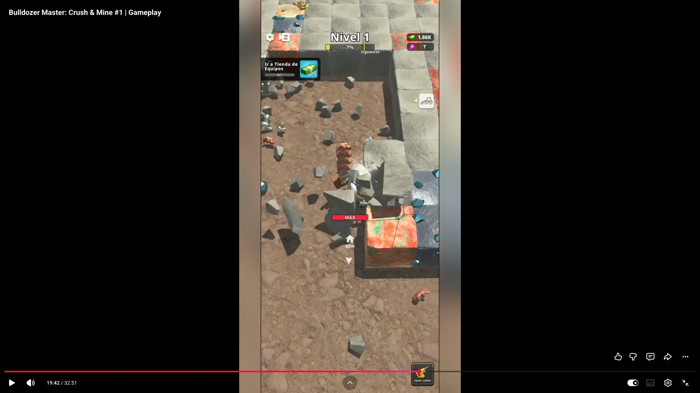
A later sample still shows the mining corridor, full load and persistent task UI.
V2 · 19:42 ↗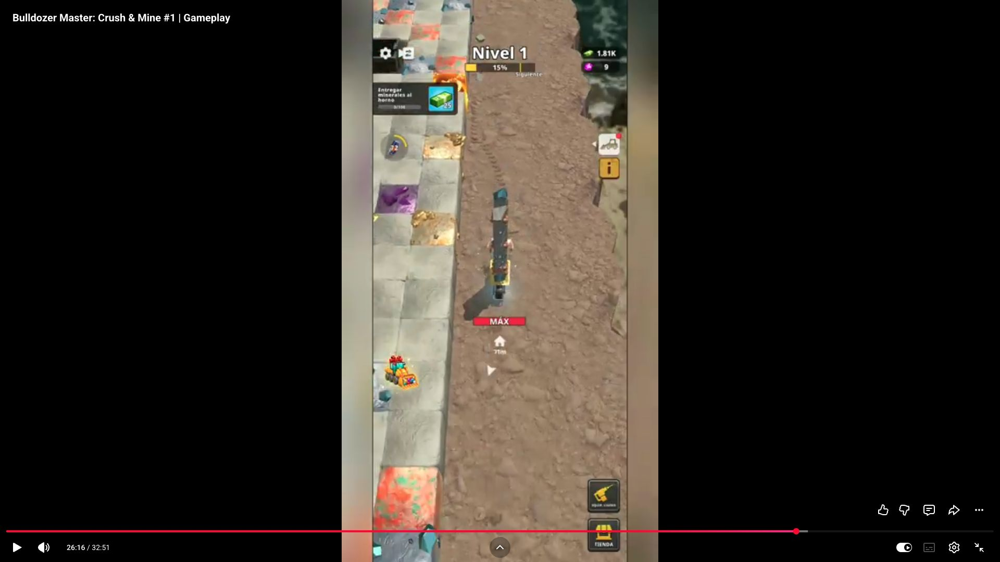
Loaded character, direction marker and distance indicator on a longer route.
V2 · 26:16 ↗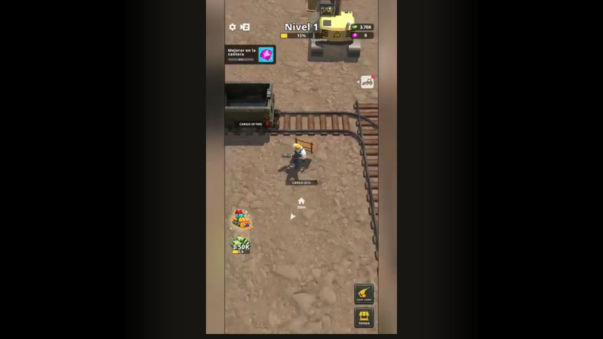
The later view includes vehicles, walkways and an upgrade-related task.
V2 · 29:33 ↗